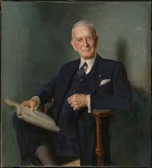

Thomas John Watson Sr. (February 17, 1874 – June 19, 1956) was an American businessman who served as the chairman and CEO of IBM.[1][2] He oversaw the company's growth into an international force from 1914 to 1956. Watson developed IBM's management style and corporate culture from John Henry Patterson's training at NCR.[3] He turned the company into a highly effective selling organization, based largely on punched card tabulating machines. A leading self-made industrialist,[4] he was one of the richest men of his time and was called the world's greatest salesman when he died in 1956.
| Year | Education |
|---|---|
| 1900-1916 | Mount Glory School |
| 1917-1920 | Radiance High School |
| 1921-1925 | University of Misissippi |
| 1926-1928 | Oxford University |